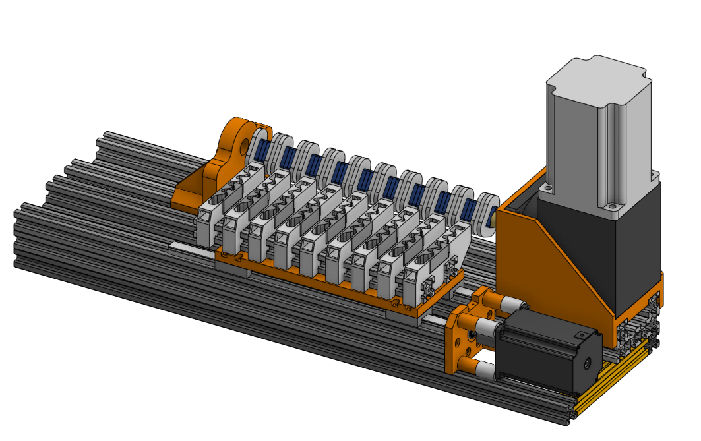
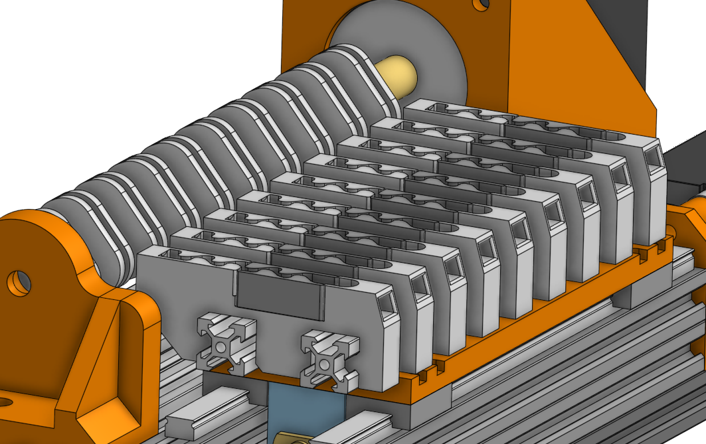
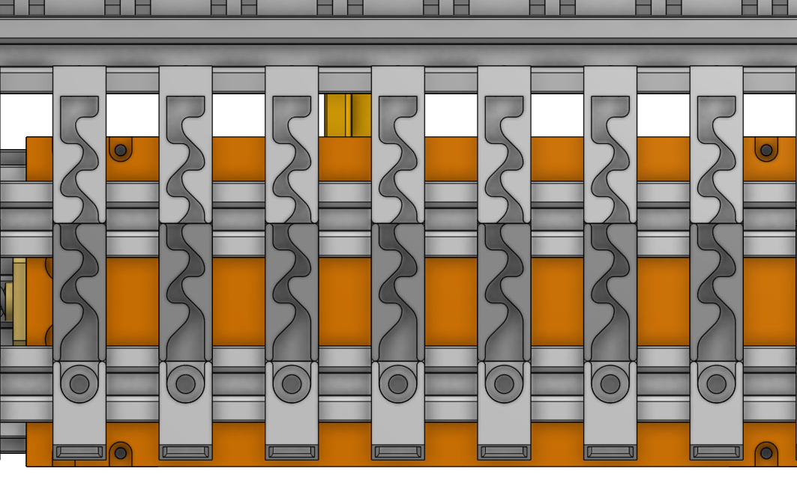
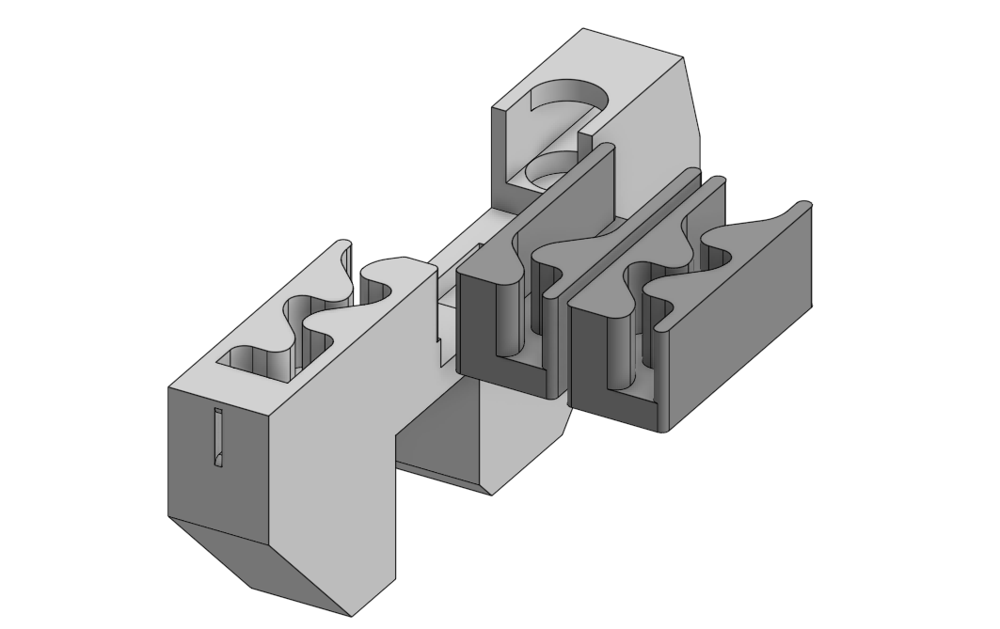
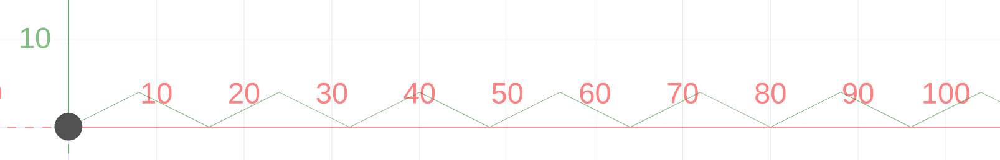
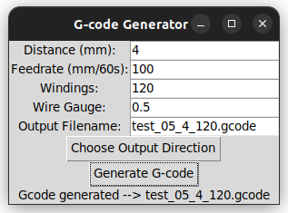

Media
-

-

-

-

Description
A nine-coil winding machine built for the R&D team of NTW wind systems (home turbine generator).
-
-

-

Example coil:
Since I had previous experience with grbl, I decided to use it here as well, even though it is an atypical construction for this system - I wrote a python program that generates gcode based on a few variables.
Graphical representation of the generated gcode:
Python/TKinter app for gcode generating: